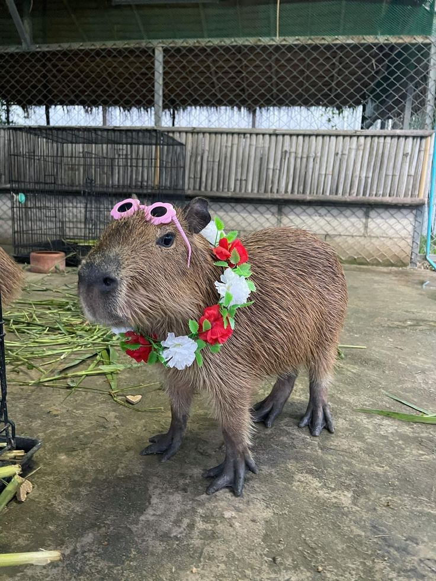
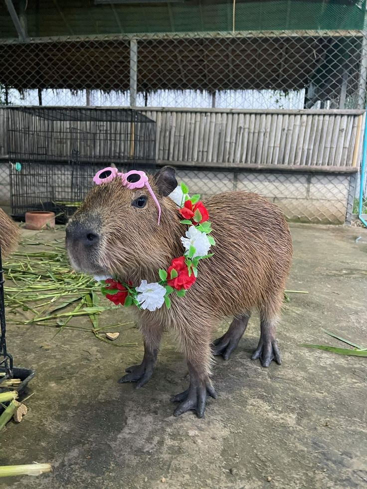

Su cuerpo es robusto: en forma de barril, la cabeza grande y el hocico prolongado.
Tiene patas cortas y fuertes: las delanteras poseen 4 dedos y las traseras 3, ambas con uñas gruesas y membranas interdigitales.
Tienen un pelaje áspero: todo su cuerpo está cubierto por dicho pelaje áspero de color pardo.
Los ojos, orejas y orificios nasales son pequeños: se ubican en la parte superior de la cabeza, de manera tal que cuando se meten al agua, les permite ver, escuchar y respirar por fuera de la superficie sin sobresalir demasiado.
Hay dimorfismo sexual: el macho, a diferencia de la hembra, posee una protuberancia de 2 cm sobre el hocico, en la cual posee una glándula sebácea que utiliza para marcar territorio.
Presentan glándulas sudoríparas: de hecho, son los únicos roedores que las tienen.
Al igual que los demás roedores, sus dientes incisivos son de crecimiento continuo: por lo que deben roer constantemente para desgastarlos.
Pueden zambullirse en el agua: cuando se sienten amenazados, suelen hacer esto para huir de sus depredadores. Si te estás preguntando qué animal se come al capibara, la respuesta la encontramos en los jaguares o los ocelotes, quienes son los mayores depredadores de este animal.
Su cola es corta: de hecho, no se ve.
Pueden vivir 10 años: si hablamos de que se encuentran en estado silvestre. Si están en cautiverio pueden vivir hasta 15 años.
𝓲𝓷𝓯𝓸𝓻𝓶𝓪𝓬𝓲ó𝓷
Si gustas saber más sobre el Capybara entra a este link: "https://www.ecologiaverde.com/capibara-caracteristicas-habitat-y-alimentacion-4037.html"
 
𝒞𝒶𝓅𝓎𝒷𝒶𝓇𝒶

𝒞𝒶𝓅𝓎𝒷𝒶𝓇𝒶